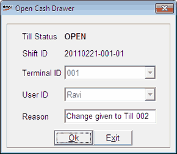

This option allows you to record the details of any instance of opening the cash drawer without any cash transactions associated with it.
How to reach: Cash > Till Management > Open Cash Drawer
The Open Cash Drawer window is displayed.

Till Status: Displays the current status of the Till.
Shift ID: Displays the current Shift ID of the Till.
Terminal ID: Displays the terminal ID (node ID) of the Till.
User ID: Displays the current user ID (login ID).
Reason: Enter the appropriate reason for opening the counter.